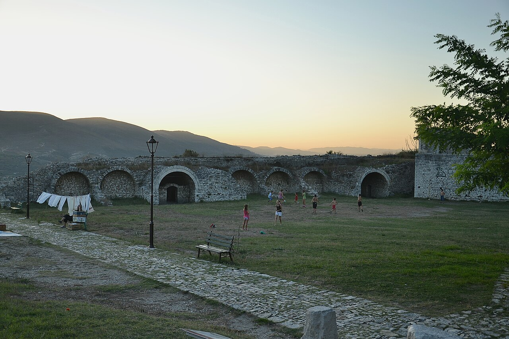
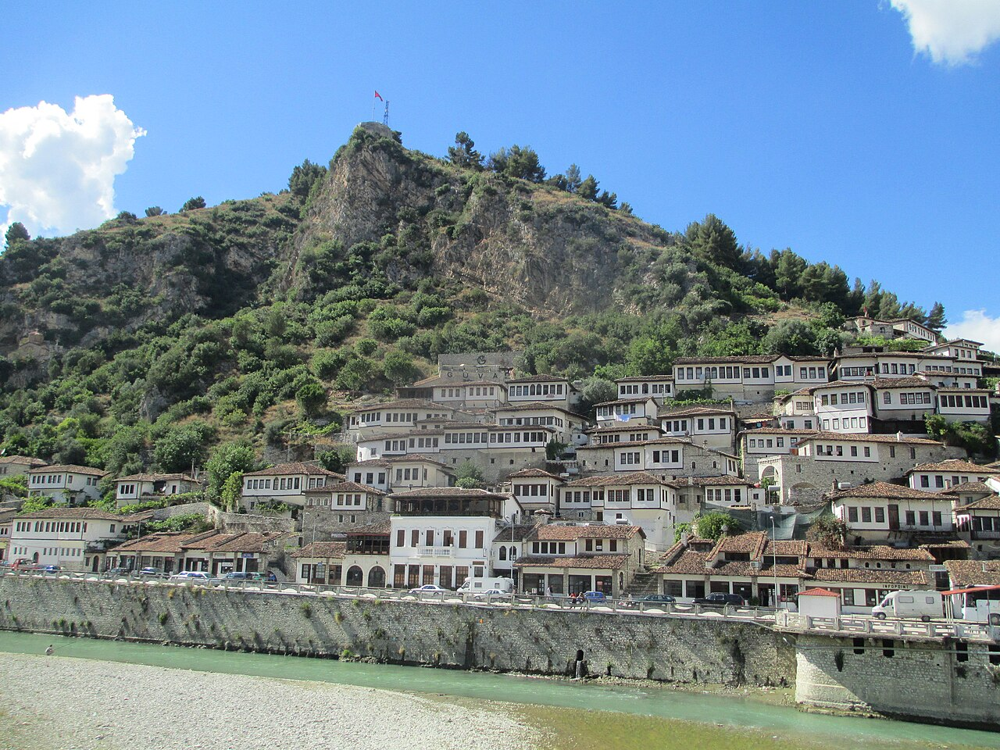
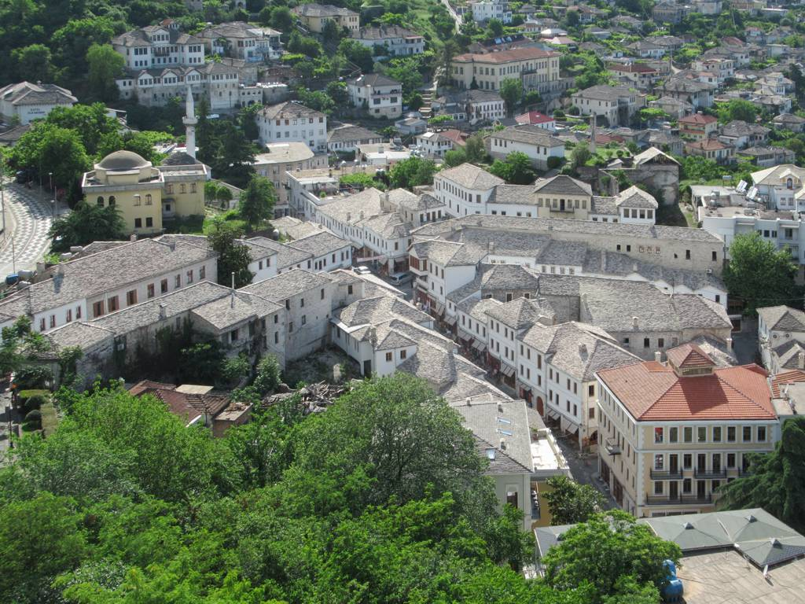
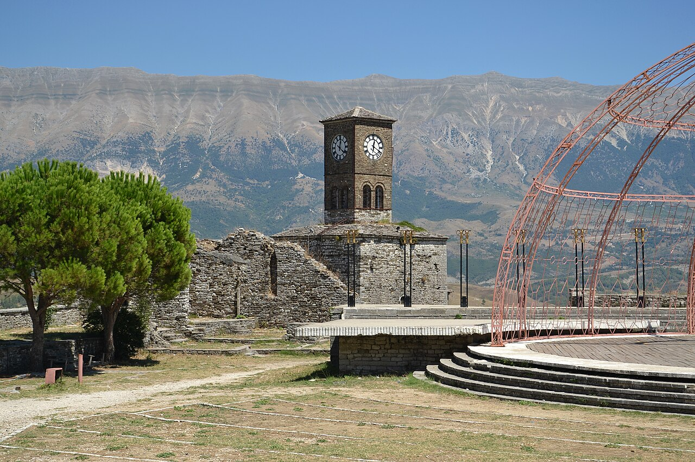
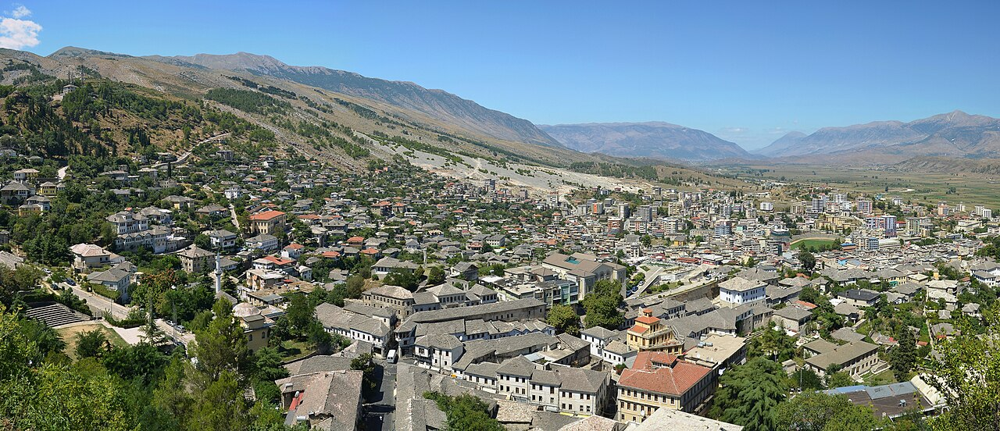
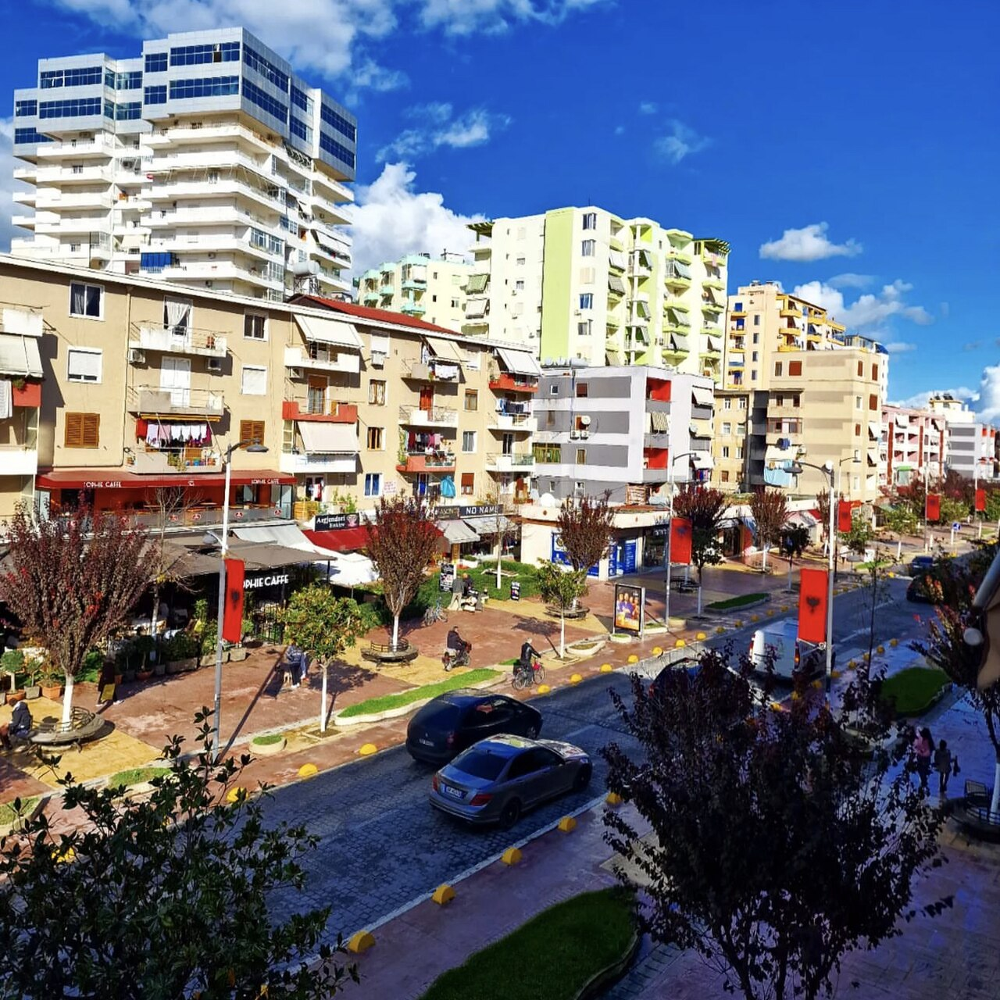
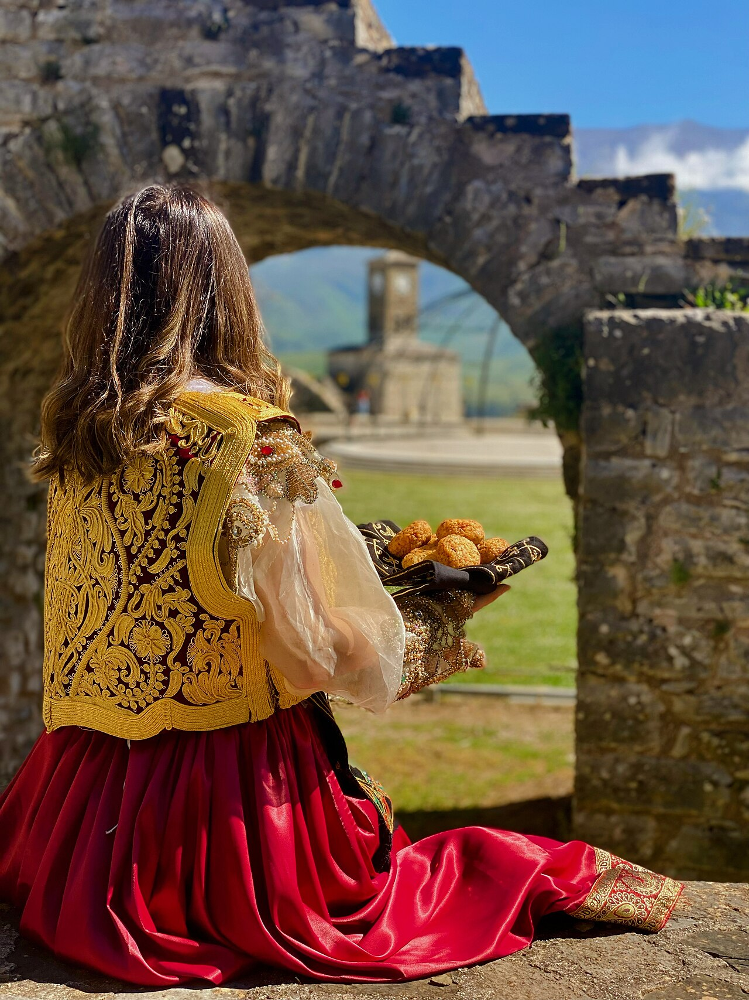
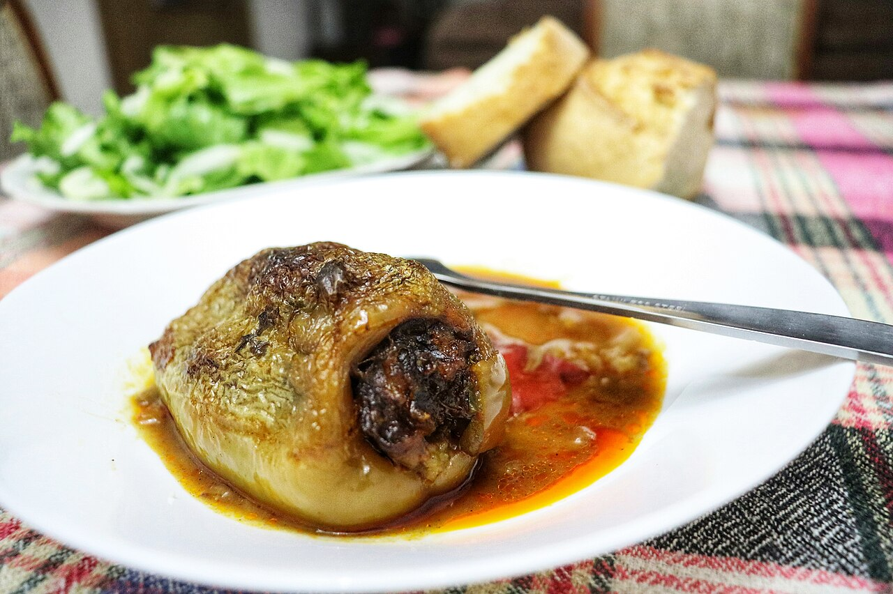
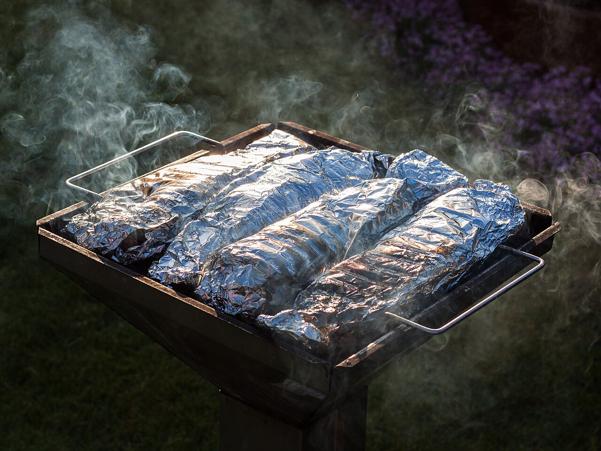

Apie kelionę
Keturių dienų kelionė po pietų Albaniją automobiliu: atskridę į Tiraną, pirmą naktį praleisime miesto centre, tada leisimės į kalnuotą Albanijos vidurį – UNESCO senamiestį Beratą su Osumo kanjonu ir Goricos tiltu, o po to į antrą UNESCO perlą – Gjirokastrą. Paskutinę dieną grįžtame per Fierį atgal į Tiranos oro uostą ir skrendame namo. Maršrutas žiedinis – automobilis atsiimamas ir grąžinamas tame pačiame oro uoste.
1 diena
1 diena (spalio 30, penktadienis): atvykimas į Tiraną


2 diena
2 diena (spalio 31, šeštadienis): Tirana → Beratas, Osumo kanjonas ir Goricos tiltas






☔ Jei spalio 31 d. lyja ar vėjuota – apačioje esantis Planas B gali būti patogesnis pasirinkimas (kanjono takas ir pilies kalva tampa slidūs).
🌧 Planas B (jei blogas oras)
Jautrūs orui: Osumo kanjono apžvalgos takas (lauke, gali būti slidu lietuje), Berato pilies kalva su statiais lauko takais ir Goricos tiltas (atviroje, vėjuotoje vietoje) – prastu oru nepatogūs arba pavojingi.
Alternatyva: Lietaus diena Berate – Onufrio muziejus ir vyno ragavimas Çobo vynuogyne
Viso vairavimo: apie 2 val. 36 min.
Patarimas: Onufrio muziejus žiemos sezonu (XI.1–IV.30) dirba antradienį–šeštadienį 9–16 val., šeštadienį (spalio 31 d.) bus atviras. Prieš vizitą į Çobo vynuogyną paskambinkite patvirtinti laiką (+355 67 407 0562) – darbo valandos 9:00–17:30.
3 diena
3 diena (lapkričio 1, sekmadienis): Beratas → Gjirokastra



☔ Jei lapkričio 1 d. lyja ar vėjuota – apačioje esantis Planas B gali būti patogesnis pasirinkimas (bazaro grindinys ir pilies kalva tampa slidūs).
🌧 Planas B (jei blogas oras)
Jautrūs orui: Gjirokastros senojo bazaro akmenimis grįstos gatvelės ir pilies kalva su statiu lauko taku – lietuje ar vėjuotu oru slidu ir nepatogu vaikščioti.
Alternatyva: Lietaus diena Gjirokastroje – Šaltojo karo tunelis ir Zekatės namas
Viso vairavimo: apie 2 val. 50 min.
Patarimas: Šaltojo karo tunelis žiemą (XI–III) dirba 08:00–14:00 – aplankykite jį ryte, prieš pietus. Zekatės namo darbo laikas ne sezono metu nepastovus (dažniausiai apie 10–17 val.) – geriausia atvykus vietoje susitarti su šeimininkais.
4 diena
4 diena (lapkričio 2, pirmadienis): Gjirokastra → Tiranos oro uostas



Žemėlapis
Kiekviena diena pažymėta sava spalva: 1 diena – raudona, 2 diena – žalia, 3 diena – mėlyna, 4 diena – oranžinė.
Orų prognozė
Kelionė vyksta daugiau nei 2 savaites nuo šiandien, todėl žemiau pateikti daugiamečiai vidurkiai tų pačių dienų orams – tai ne tiksli prognozė. Tiksli prognoz ateis artėjant kelionei, apie 2 savaites prieš išvykimą.
Tirana (centras)
Dažniausiai sausa, 11–22°C
Lietaus tikimybė: 0% · Vėjas iki 8 km/h
Beratas
Dažniausiai sausa, 13–24°C
Lietaus tikimybė: 20% · Vėjas iki 12 km/h
Gjirokastra
Dažniausiai sausa, 10–22°C
Lietaus tikimybė: 20% · Vėjas iki 6 km/h
Pakeliui į Tiranos oro uostą
Kartais lyja, 12–21°C
Lietaus tikimybė: 40% · Vėjas iki 11 km/h
Ką pasiimti
- Skysčiai rankiniame bagaže – tik iki 100 ml talpose, visi sudėti į vieną 1 l skaidrų maišelį; peiliai ir daugiafunkciniai įrankiai keliauja tik į registruotą bagažą (šios kelionės nėra).
- Temperatūra svyruoja nuo ~10 °C ryte/vakare iki ~22–24 °C dieną – rinkitės sluoksniuojamus drabužius, ne vieną storą striukę.
- Mečetės ir bažnyčios lankymui moterims pravers skara pečiams uždengti, visiems – uždaros kelnės.
- Prieš skrydį patikrinkite konkrečios oro linijos (WAW–TIA) rankinio bagažo matmenų ir svorio limitą – jie skiriasi nuo bendrų taisyklių.
- Albanijoje naudojamas tas pats kištuko tipas kaip Lietuvoje – maitinimo adapterio nereikia.
Dokumentai ir pinigai
Drabužiai
Avalynė
Vairavimui ir navigacijai
Higiena ir vaistinėlė
Elektronika
Lankymuisi ir žygiams
Automobilio nuoma
Rekomenduojamas automobilio tipas
Kompaktinis SUV
Dacia Duster, Kia Sportage, Hyundai Tucson
Geriausias pasirinkimas: pakankama prošvaisa kalvotiems keliams, 4 žmonių bagažui tinkanti bagažinė, rudens lietui stabilesnis laikymasis kelyje nei sedanui. Pilno visureigio nereikia – siauri kalnų keliai į maršrutą nepatenka.
~38 €/parai · ~150 € visai kelionei
Universalas
Skoda Octavia Combi, VW Passat Variant
Jei prioritetas mažesnės degalų sąnaudos ir žemesnė kaina: didelė bagažinė, patogus lygiems kelio ruožams, bet mažesnė prošvaisa gali trukdyti kai kuriuose žvyrkeliuose.
~30 €/parai · ~120 € visai kelionei
7 vietų minivenas
Dacia Jogger, VW Caddy Maxi
Alternatyva, jei vežatės daug bagažo: daugiau vietos daiktams nei kompaktiniame SUV, tačiau mažiau tinkamas kalvotiems keliams ir brangesnis degalams.
~40 €/parai · ~160 € visai kelionei
Nuomos įmonės
Karruka Rent a Car Rinas
Kompaktinis SUV (Kia Stonic / VW T-Cross), 5 vietos
~200 € viso
Aukščiausiai vertinama nuomos bendrovė tiesiai TIA oro uoste – patikimas pasirinkimas be transportavimo, patogu atsiimant vakare po atvykimo skrydžio.
📍 Atsiėmimas: Tiranos oro uostas, terminalo prieigoje
RezervuotiEasydrive Albania
Kompaktinis SUV (Hyundai Tucson / Kia Sportage), 5 vietos
~180 € viso
Geriausias kainos ir kokybės santykis: skaidrūs įkainiai be paslėptų mokesčių, naujas automobilių parkas, aukštas klientų vertinimas tarp visų TIA nuomotojų.
📍 Pristatymas ir atsiėmimas TIA oro uoste, veikia 24/7
RezervuotiRental Cars Tirana
Kompaktinis SUV, 5 vietos
~160 € viso
Vietinė, patikima įmonė su labai geru vertinimu ir konkurencinga kaina – tinkama alternatyva, jei pirmieji du pasirinkimai neturėtų laisvo automobilio.
📍 Atsiėmimas Tiranos oro uoste
Rezervuoti- Nuomos trukmė skaičiuojama nuo atsiėmimo spalio 30 d. vakare iki grąžinimo lapkričio 2 d. iki 17:00 – tai apie 3–4 paras priklausomai nuo bendrovės taisyklių; patikslinkite tiksliai rezervacijos metu.
- Reikės kredito kortelės depozitui (dažniausiai 200–500 €, blokuojama, ne nuskaitoma) – pasiimkite kortelę to paties asmens, kuris nurodytas kaip vairuotojas.
- Degalų politika dažniausiai „pilnas bakas – pilnas bakas“ – prieš grąžinimą prie TIA užpildykite baką.
- Kelionė žiedinė (TIA–TIA), tad papildomo one-way mokesčio už automobilio palikimą kitame mieste neturėtų būti.
- Kadangi sutemsta apie 17:00–17:30, grąžinimą planuokite su atsarga iki 17:00 lapkričio 2 d.
- Prieš pasirašant sutartį nufotografuokite automobilio būklę – tai apsaugo nuo ginčų dėl žalos grąžinant automobilį.
Kur pavalgyti
1 diena – Tirana
2 diena – Beratas
3 diena – Gjirokastra
4 diena – Fieris
Barai
Ką paragauti

Tavë kosi
Albanijos nacionalinis patiekalas – ėrienos gabaliukai, keptas ryžiuose su jogurto ir kiaušinių padažu orkaitėje iki aukso spalvos.
4–7 €
Kur: Restorant Mangalemi, Tradita e Beratit, Restorant Tradicional Odaja

Byrek
Sluoksniuota pyrago tešla, įdaryta sūriu, spinatais ar mėsa – populiariausias pigus užkandis visoje Albanijoje.
1–3 €
Kur: Byrektore Paskali, Kujtimi

Qofte shtëpie
Pagal namų receptą kepami pagardinti mėsos kukuliai, dažnai patiekiami su jogurtu ar daržovėmis.
3–5 €
Kur: Taverna Tafaj, Kujtimi

Fërgesë
Troškintos paprikos, pomidorai ir varškės sūris – paprastas, bet turtingo skonio tradicinis patiekalas.
3–5 €
Kur: Restorant Mangalemi, Tradita e Beratit, Oliva Tradicion

Qifqi
Gjirokastros specialybė – ryžių kukuliukai su kiaušiniais, mėtomis ir prieskoniais, apkepti aukso plutele.
3–5 €
Kur: Kujtimi, Restorant Tradicional Odaja

Speca të mbushur (Dollma)
Paprikos, įdarytos mėsos ir ryžių mišiniu, troškintos pomidorų padaže.
3–5 €
Kur: Tradita e Beratit, Restorant Tradicional Odaja, Oliva Tradicion

Troftë e pjekur (keptas upėtakis)
Šviežias upėtakis iš Osumo upės, keptas ant grotelių su citrina ir žolelėmis – Berato apylinkių specialybė.
6–10 €
Kur: Restorant Mangalemi
Biudžetas (4 keliautojai, 4 dienos)
| Kategorija | Min (€) | Tikėtina (€) | Maks (€) |
|---|---|---|---|
| ✈️ Skrydžiai WAW⇄TIA (4 žm.) | 301 | 325 | 450 |
| 🚗 Automobilio nuoma (3–4 paros) | 160 | 180 | 210 |
| 🏨 Nakvynė (3 naktys, 2 kambariai) | 160 | 250 | 452 |
| 🍽️ Maistas (4 žm. × 4 d.) | 316 | 340 | 364 |
| 🎫 Bilietai į objektus | 12 | 20 | 40 |
| ⛽ Degalai | 75 | 95 | 120 |
| VISO | ≈1024 | ≈1210 | ≈1636 |
- Skrydžio kaina (301 € už 4 žm.) neapima registruoto bagažo – jei reikės, papildomai gali kainuoti ~100–150 € grupei.
- Nakvynės kainos nepatvirtintos konkrečioms datoms – didžiausias biudžeto svyravimo šaltinis, verta rezervuoti iš anksto.
- Automobilio nuomos kainoje (Rental Cars Tirana, 160 €) neaišku, ar įskaičiuotas pilnas draudimas – patikslinti rezervacijos metu.
- Įėjimo bilietų kainos į Berato ir Gjirokastros pilis verta patikrinti vietoje.
Praktinė informacija
- Skrydis į Albaniją
- WAW → TIA, atvykimas 2026-10-30, 20:30
- Skrydis atgal
- TIA → WAW, 2026-11-02, išskridimas 19:05
- Automobilio grąžinimas
- Tiranos oro uostas (TIA), iki 17:00, 2026-11-02
- Viešbučio kontaktas
- [įrašyti telefoną / rezervacijos nr.]
- Nuomos įmonės kontaktas
- [įrašyti telefoną / rezervacijos nr.]
- Grupės kontaktas vietoje
- [įrašyti telefoną]